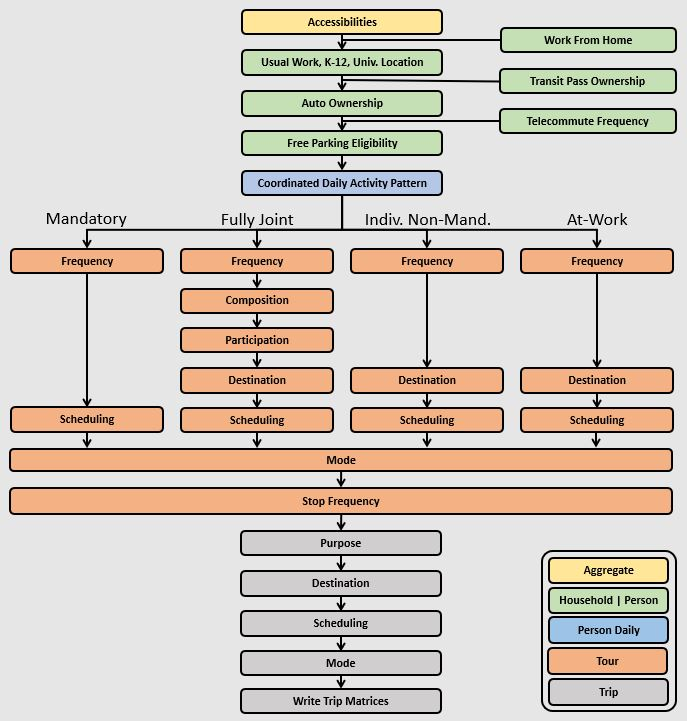
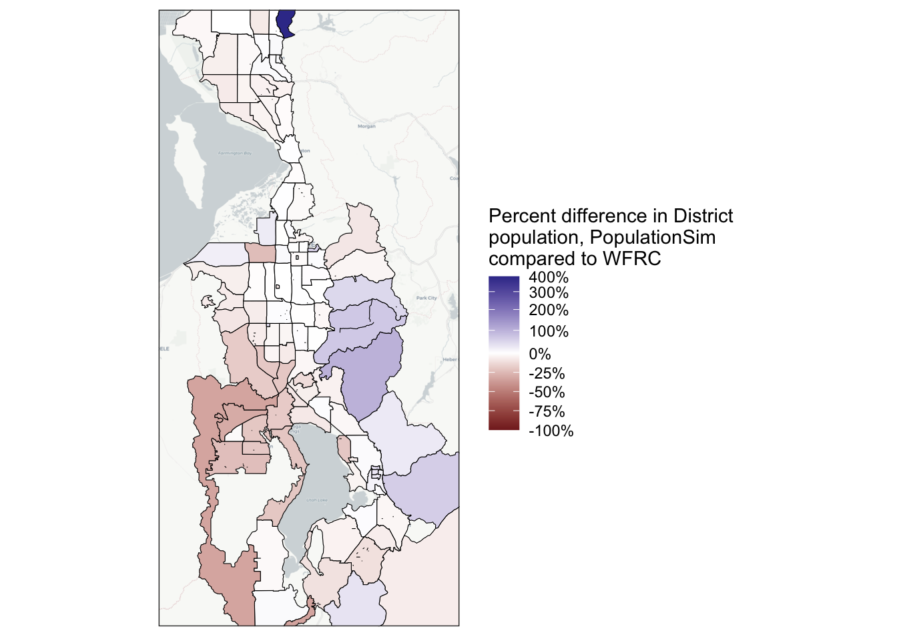
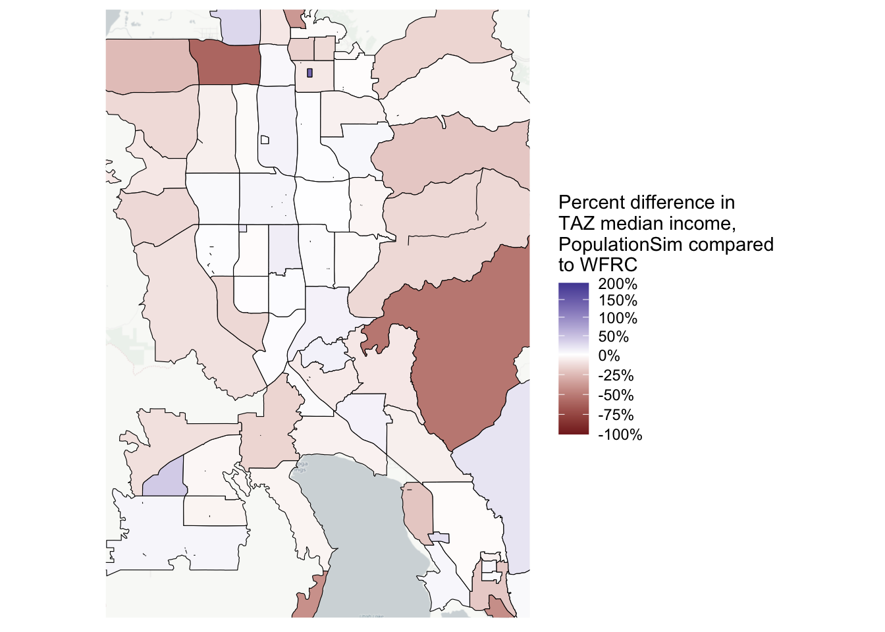
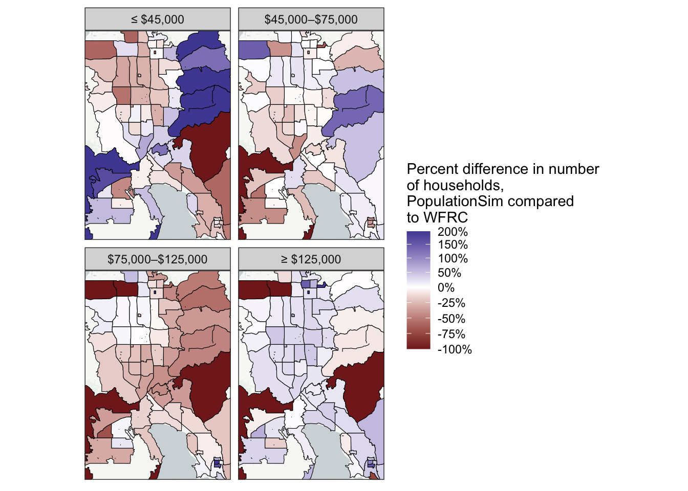
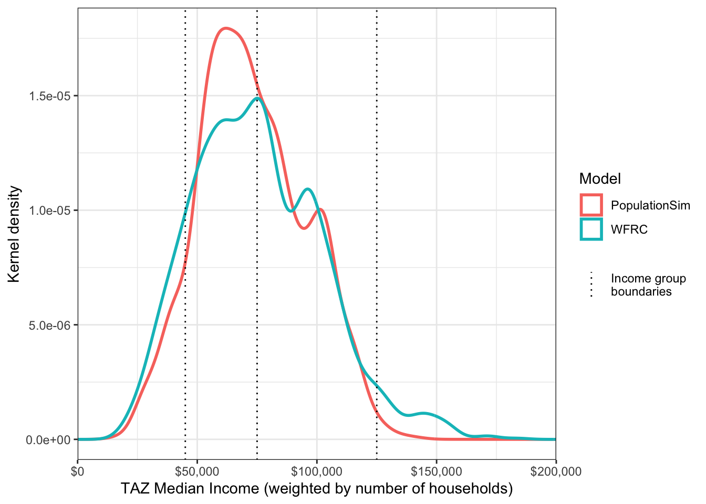
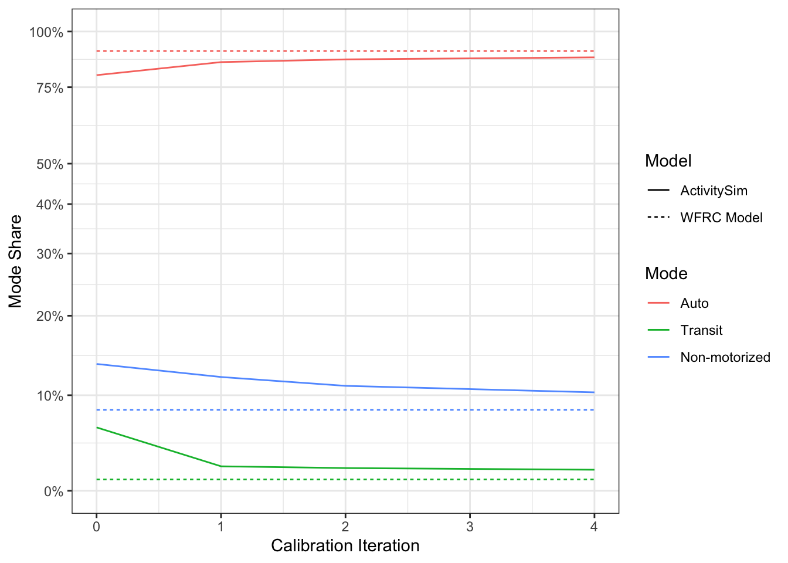
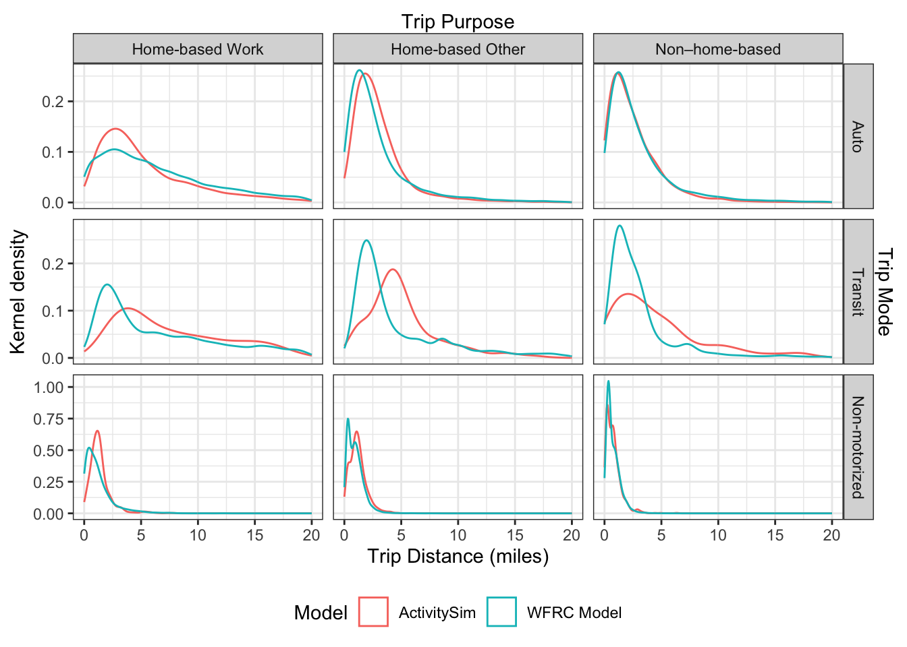

| Control | Geography | Source | Weight |
|---|---|---|---|
| Population | Entire Region | Census | 5,000 |
| Number of Households | TAZ | WFRC Model | 1,000,000,000 |
| Household Size | Census Tract | Census | 10,000 |
| Persons by Age Group | Census Tract | Census | 10,000 |
| Households by Income Group | Census Tract | Census | 500 |
| Workers per Household | Census Tract | Census | 1,000 |
3 Methodology
This paper seeks to compare methodological differences between trip- and activity-based modeling frameworks. The Wasatch Front Regional Council (WFRC) travel demand model is used as a representative trip-based model, and an ActivitySim implementation in the same study area is used as a representative activity-based model (ABM). Note that the focus is not on comparing model accuracy or performance, but rather on comparing the process of using each model, including the types of analyses that can be performed. There are therefore few direct comparisons of model outputs between each type. Instead, this research highlights the strengths and weaknesses of each model type in planning and policy analysis, and illustrates these differences.
The following sections discuss the specific models in more detail.
3.1 WFRC Model
The WFRC model is implemented in the CUBE software by Bentley (Bentley Systems n.d.), and is currently used by WFRC for modeling travel in the Salt Lake City, Utah area. WFRC provided the model directly, including land use forecasts and the current long-range transportation plan. The model is taken essentially as-is, with no changes other than those noted in Chapters 4–6.
The WFRC model, like many trip-based models, requires the following inputs:
- Land use data, including information about population, employment, and socioeconomic variables such as income, delineated by transportation analysis zone (TAZ). This is provided by WFRC directly, as an output of their land use forecasting model(s).
- Travel skims, detailing travel time, cost, etc. between each origin-destination pair of TAZs. The WFRC model uses an iterative process of assigning volumes to the transportation network and recalculating the skims, which are used in the mode and destination choice model steps.
- Transportation networks, including highway, transit, etc. networks which connect the TAZs to each other. These networks contain information such as link speed and capacity. Though the WFRC model assigns travel volumes to the network, this paper does not compare the model’s network assignment results. However, the network volumes are still used to calculate the loaded network skims.
- Lookup tables, used in many model steps for information such as trip rates by household type. These are taken directly from the WFRC model without modification.
- Model constants and coefficients, which some model steps such as mode choice require for calibration. These are also taken directly from the WFRC model.
Like many trip-based models, the WFRC model follows the “four-step” approach and has main steps of trip generation, trip distribution, mode choice, and network assignment. The model also includes a disaggregation step at the beginning where the TAZ-level data is used via lookup tables to estimate the number of households by size, income group, number of workers, and auto ownership. The trip generation step uses lookup tables for each household type to determine the number of trips produced by purpose. Trip attractions are determined based on the number of jobs in each TAZ, with differing coefficients by job type. Trip distribution uses a gravity model of the form
\[
T_{ij} = P_i \times \frac{A_j F_{ij}}{\displaystyle \sum_J A_j F_{ij}},
\]
where \(T_{ij}\) is the number of trips from zone \(i\) to \(j\), \(P_i\) is the productions at \(i\), \(A_j\) is the attractions at \(j\), \(F_{ij}\) is the cost term/function from \(i\) to \(j\), and \(J\) is the set of all zones trips from \(i\) can be attracted to. Mode choice uses a choice model to assign a percentage of trips of each purpose to each mode. Network assignment is done via an iterative process to equalize travel time between potential routes.
The WFRC model outputs include trip tables by purpose, mode, and time of day, as well as loaded network skims.
3.2 ActivitySim
ActivitySim is an open-source ABM led by a consortium of transportation planning agencies. ActivitySim is highly configurable, and many agencies have their own bespoke implementation. This paper uses an ActivitySim implementation based on Gregory S. Macfarlane and Nathan J. Lant (2021), which is in turn based on the prototype configuration for the Metropolitan Transportation Commission serving the San Francisco area (Erhardt et al. 2011). The exact implementation is available on GitHub.
ActivitySim requires similar inputs to the WFRC model, though it does not assign traffic and so does not require any transportation networks. However, ActivitySim does require network skims for information on travel time, cost, etc. These skims are obtained from any network assignment process, though ActivitySim itself does not include network assignment. A discussion and comparison of network assignment processes is outside the scope of this project, so this ActivitySim implementation uses the travel skims output from the WFRC model directly.
ActivitySim additionally requires population data at an individual level, including information such as age, household income, and home location. Due to privacy concerns, real data is rarely used for this purpose, and a synthetic population representative of the study area is used instead. Section 3.2.1 discusses the population used in more detail.
ActivitySim, like all ABMs, simulates transportation decisions on an individual level. ActivitySim has a hierarchical decision tree, where long-term decisions (such as auto ownership and telecommute frequency) are made first, followed by daily and tour- and trip-level decisions such as scheduling and mode choice (see Figure 3.1). Each of these steps determines information that will be used in subsequent steps, and many steps can be turned on or off depending on what is needed for the model implementation.

The steps can broadly be categorized into five groups, as shown in Figure 3.1: aggregate, household/personal, daily, tour-level, and trip-level steps. The aggregate steps mainly involve determining impedance measures between each pair of zones (travel time, distance, cost, etc.). In this case, these impedances are supplied directly as network skims, output from the WFRC model.
The household/personal steps relate to long-term decisions that are unlikely to change quickly based on daily transportation conditions. These steps include determining remote work status, work/school location, auto ownership, transit pass ownership, and free parking availability at work. Much of this information can be supplied directly or explicitly modeled. This ActivitySim implementation does not supply any of this information directly, and explicitly models remote work status, work/school location, auto ownership, and free parking availability. Transit pass ownership is not modeled.
The daily decisions primarily concern an individual’s DAP. ActivitySim contains a step to assign mandatory, non-mandatory, and joint tours based on personal and household information (joint tours combine both mandatory and non-mandatory activities). For example, full-time workers are more likely to make a mandatory tour than part-time workers, all else being equal.
Once a DAP is chosen, ActivitySim creates tours for each major activity in the day. Additionally, ActivitySim determines if an individual makes an “at-work” tour (e.g. leaving for lunch and returning to the workplace). Each tour is scheduled and assigned a primary mode, as well as a primary destination for non-mandatory and joint tours. The tours are then populated with trips, and ActivitySim assigns each trip a purpose, destination, time of day, and mode compatible with the tour-level assignment.
The final steps of ActivitySim are writing output trip matrices and other tables, including information on land use, persons, households, tours, and trips.
PopulationSim
This paper uses PopulationSim (Association of Metropolitan Planning Organizations 2023) to create a synthetic population for ActivitySim. The synthetic population aims to be representative of the study area while maintaining privacy. PopulationSim takes as input a “seed” of individuals and households, and populates the area with copies of these to match given control totals.
The seed sample comes from the 2019 American Community Survey Public Use Microdata Sample (U.S. Census Bureau 2022), which contains a sample of actual (anonymized) individuals and households at the Public Use Microdata Area (PUMA) geography (PUMAs partition the United States into areas of around 100,000 people each (U.S. Census Bureau 2023)). The control totals come from two different sources: the U.S. Census and the WFRC model. Table 3.1 shows these controls as well as their geographic level and source. PopulationSim also allows setting different weights to each control, and Table 3.1 gives this information as well.
Most of these controls come from Census data, with only the number of households per TAZ coming from the WFRC model data. Note also that there are many personal and household variables that are not accounted for in these controls, such as sex, vehicle ownership, internet access, etc. These variables are not controlled for and are dependent on which seed persons or households are copied in controlling for the other variables. However, this process is assumed to still give a representative enough estimate for the uncontrolled variables without needing to model them explicitly.
The outputs of PopulationSim include a persons and households table comprising the synthetic population, as well as summary tables.
3.3 Initial Model Comparison/Calibration
While this research does not directly compare the outputs of ActivitySim to those of the WFRC model, it is important to ensure similar performance between the two models for meaningful analyses. As such, a baseline scenario in both models is used in order to calibrate the ActivitySim implementation to the WFRC model. This baseline scenario uses the 2019 WFRC model as-is. For ActivitySim, the baseline scenario uses 2019 Census and WFRC data to create the synthetic population, and the choice models use land use data and network skims from the baseline WFRC scenario.
Verification of the Synthetic Population
The controls for PopulationSim mostly come from the Census, as can be seen in Table 3.1. However, the WFRC model contains TAZ-level data including population and median income. The WFRC model also has a disaggregation step that estimates the number of households by size and income group.
This section compares the output of PopulationSim to the WFRC model on each of these variables at the TAZ level.
Figure 3.2 shows the difference in TAZ population between PopulationSim and the WFRC data. It is worth noting that since the number of households was controlled at the TAZ level from the WFRC data with an extremely high weight, the number of households per TAZ in the synthetic population match exactly to the WFRC data. The average household size will therefore follow a similar error distribution to the one shown in Figure 3.2.

The population per TAZ is similar to the WFRC data in most places, though there are some discrepancies especially near Herriman and Lehi. Since total population is a region-level control, but number of households is a TAZ-level control, this shows PopulationSim is predicting a smaller average household size in Herriman and Lehi than the WFRC data suggests.
Income is also an important factor in travel behavior (Zegras and Srinivasan 2007), and Figure 3.3 shows a TAZ-level comparison of median income between the synthetic population and the WFRC data. The synthetic population does have a lower median income than the WFRC data in many TAZs, but the error is in most cases fairly small, especially in more populated areas. However, both the WFRC model and ActivitySim use household income groups rather than individual household income to inform travel decisions. These groups are taken from the WFRC model (see Table 3.2), and the groups in PopulationSim and ActivitySim were adjusted to match. Figure 3.4 shows the difference in number of households by income group, and this figure shows a similar trend of PopulationSim over-predicting low-income households.
| Income Group | Income Range |
|---|---|
| 1 | ≤ $45,000 |
| 2 | $45,000–$75,000 |
| 3 | $75,000–$125,000 |
| 4 | ≥ $125,000 |


Income was not weighted very heavily as a control in PopulationSim (see Table 3.1), and this is in part why there are discrepancies between the models. However, the overall distribution of income is similar between the models, as Figure 3.5 shows.

Verification and Calibration of ActivitySim
This section compares the outputs of both models to verify that trip patterns roughly agree between them. There are three comparisons of interest between the outputs of the two models: mode split, trip length frequency distribution, and remote work.
The initial baseline ActivitySim scenario predicted a mode split significantly different to that from the WFRC model, and so calibration efforts were needed. We adjusted the alternative-specific constants in ActivitySim’s mode choice model to better match the mode split in the WFRC model. Table 3.3 compares the mode split of both models after several iterations of this calibration. Overall, the calibration resulted in a reasonably similar mode split between the two models, though there are still discrepancies (e.g. ActivitySim is predicting about twice as many transit trips as the WFRC model). However, further adjustment of the constants would cause their values to become unreasonably large, as ActivitySim’s mode split begins converging at this point regardless of the calibration constant values (see Figure 3.6). This is likely due to the mode choice coefficients being unrepresentative of the study area. This ActivitySim configuration is ultimately based on the San Francisco area, and so coefficients on variables such as travel time and income are calibrated for that area (hence in part why there are so many more transit trips).
| Purpose | Mode | ActivitySim predicted trips | WFRC predicted trips | Error | % Error |
|---|---|---|---|---|---|
| Auto | Home-based Other | 3253220 | 4096688 | -843468 | -20.6% |
| Non-motorized | Home-based Other | 532274 | 510143 | 22131 | 4.3% |
| Transit | Home-based Other | 67396 | 37346 | 30050 | 80.5% |
| Auto | Home-based Work | 1524169 | 1586414 | -62245 | -3.9% |
| Non-motorized | Home-based Work | 83119 | 76506 | 6613 | 8.6% |
| Transit | Home-based Work | 62814 | 48752 | 14062 | 28.8% |
| Auto | Non–home-based | 1839065 | 2224878 | -385813 | -17.3% |
| Non-motorized | Non–home-based | 162979 | 146404 | 16575 | 11.3% |
| Transit | Non–home-based | 30513 | 13453 | 17060 | 126.8% |

Figure 3.7 compares the trip length frequency distribution of the two models by mode and purpose. Both ActivitySim and the WFRC model contain destination choice models which can be adjusted to affect the distribution of trip length. However, as the figure shows, the two models have similar TLFDs, so no adjustment was necessary. The most significant discrepancies are with transit trips, again likely due to this configuration of ActivitySim being calibrated to San Francisco, making transit more attractive. Note that though these distributions match well enough for the purposes of this research, further calibration would be required to create a production-ready ActivitySim implementation.

The WFRC model has basic support for predicting telecommuting and work-from-home trips. This includes a lookup table of telecommute percentages based on job type and year. ActivitySim also has this functionality, and can additionally use individual- and household-level variables in its predictions. It is worth noting that both the WFRC model and ActivitySim make a distinction between “telecommuting”, where an individual commutes to work some days and does not others, and “work-from-home” (or “home-based jobs” in the WFRC model), where an individual’s workplace is always at their home.
The ActivitySim implementation discussed in Gregory S. Macfarlane and Nathan J. Lant (2021) does not include any submodels related to remote work. However, the example ActivitySim implementation for SEMGOG does include these submodels, and our ActivitySim implementation takes these submodels directly from the SEMCOG example. Some modifications to the remote work submodels were needed for compatibility, but only included….
Both models treat “work-from-home”/“home-based jobs” similarly. The WFRC model’s land use data contains employment by type in each TAZ, and it considers a “home-based job” as a separate job type, so these are not counted toward employment totals in trip generation and subsequent steps.
ActivitySim has a “work from home” submodel which assigns workers work-from-home status based on personal variables such as income, sex, and education (coefficients on these variables were left unchanged from the existing configuration, see Table 3.4). There is also a “target work-from-home percent” value that adjusts the model to reach the specified work-from-home proportion of all workers. Individuals with work-from-home status are then prohibited from making a mandatory tour. This target work-from-home percentage is set at 2.3%, based on a weighted average from the WFRC model data. We made no other adjustments to the ActivitySim work-from-home submodel.
| Description | Coefficient |
|---|---|
| Constant for Working from home | 0.438 |
| Full time worker (1 if true) | -0.812 |
| Female Worker | -0.347 |
| Female worker with a Preschool Child in Household | 0.573 |
| Accessibility to workplaces of the home mgra | -0.140 |
| Presence of Non Working Adult in the Household | -0.372 |
| Education Level Bachelors or higher degree | 0.285 |
| Household income Less than 30K | -0.393 |
| Age Group - Less than 35 years | -0.574 |
| Age Group - 35 yrs to 45 yrs | 0.000 |
| Age Group - 45 yrs to 55 yrs | 0.214 |
| Age Group - 55 yrs to 65 yrs | 0.452 |
| Age Group - Older than 65yrs | 0.584 |
| ABM2 calibration - work from home | -0.016 |
| Phase2 calibration temp | -0.628 |
The two models differ in their approach to telecommuting, however. The WFRC model has a lookup table of telecommuting shares based on job type (see Table 3.6), including predictions for future years. ActivitySim has a “telecommute frequency” submodel which assigns workers a telecommute status indicating the number of days they work remotely per week. Based on this status, ActivitySim adjusts the likelihood of making a mandatory tour. Telecommute status depends on personal variables similar to those in the work-from-home submodel by default. Notably, the telecommute frequency submodel also includes adjustments based on an individual’s distance to work. No other changes were made to the existing variables in this submodel, and Table 3.5 shows the submodel coefficients.
| Description | 1_day_week | 2_3_days_week | 4_days_week |
|---|---|---|---|
| Retail | 0.312 | 0.125 | 0.078 |
| Food | -0.368 | -0.148 | -0.092 |
| Manufacturing | 0.038 | 0.015 | 0.010 |
| not sure, unused | 0.000 | 0.000 | 0.000 |
| Office | 1.782 | 0.712 | 0.445 |
| Government and education | -0.560 | -0.224 | -0.140 |
| Health | 0.158 | 0.063 | 0.039 |
| other | 1.535 | 0.614 | 0.384 |
| Agriculture | 2.262 | 0.904 | 0.566 |
| Mining | -2.030 | -0.810 | -0.511 |
| Construction | 0.816 | 0.326 | 0.204 |
| Has children 0 to 5 years old | 0.000 | 0.000 | -0.864 |
| Has children 6 to 12 years old | 0.000 | 0.517 | -0.810 |
| One adult in hh | 0.177 | 0.000 | -0.043 |
| 2 or more adults in hh | 0.000 | 0.000 | 0.000 |
| female | 0.000 | 0.000 | 0.000 |
| Part-time worker | 0.000 | 0.425 | 1.112 |
| College student | 0.000 | 0.600 | 0.000 |
| Pays to park | 0.457 | 0.000 | 0.000 |
| Income 60-100k | 0.560 | 0.389 | 0.000 |
| Income 100-150k | 0.644 | 0.193 | 0.000 |
| Income 150k+ | 0.920 | 0.765 | 0.000 |
| 0 Autos | 0.000 | 0.407 | 0.000 |
| 1 Auto | 0.000 | 0.000 | 0.000 |
| 3+ Autos | 0.000 | -0.730 | 0.000 |
| Distance to work | 0.016 | 0.000 | 0.000 |
| temp_calibration | -4.000 | -4.250 | -6.000 |
In order to calibrate ActivitySim’s telecommute frequency submodel to the WFRC data, however, we added additional job type variables to ActivitySim to match those given in Table 3.6. Because these are choice coefficients rather than target percentages, the values needed to be calibrated to match the WFRC targets. The calibration allowed ActivitySim to match these targets exactly, and the coefficients are given in Table 3.6.
| Job Type | WFRC Telecommute % | 1 day | 2–3 days | 4 days |
|---|---|---|---|---|
| Retail | 2.70% | 0.312 | 0.125 | 0.078 |
| Food | 1.87% | -0.368 | -0.148 | -0.092 |
| Manufacturing | 2.02% | 0.038 | 0.015 | 0.010 |
| Office | 6.66% | 1.782 | 0.712 | 0.445 |
| Gov't/Education | 1.67% | -0.560 | -0.224 | -0.140 |
| Health | 2.86% | 0.158 | 0.063 | 0.039 |
| Agriculture | 6.93% | 2.262 | 0.904 | 0.566 |
| Mining | 0.53% | -2.030 | -0.810 | -0.511 |
| Construction | 3.28% | 0.816 | 0.326 | 0.204 |
| Other | 5.37% | 1.535 | 0.614 | 0.384 |
Because both remote work submodels in ActivitySim are run before an individual’s DAP is chosen, ActivitySim implicitly models a “rebound effect”, where individuals working remotely on any given day may be more likely to make discretionary tours. However, because the WFRC model does not include this effect, the ActivitySim DAP model is left unchanged. Table 3.7 shows the coefficients of the DAP model for individuals who work remotely.
| mpg | cyl | disp | hp | drat | wt | qsec | vs | am | gear | carb | |
|---|---|---|---|---|---|---|---|---|---|---|---|
| Mazda RX4 | 21.0 | 6 | 160 | 110 | 3.90 | 2.62 | 16.5 | 0 | 1 | 4 | 4 |
| Mazda RX4 Wag | 21.0 | 6 | 160 | 110 | 3.90 | 2.88 | 17.0 | 0 | 1 | 4 | 4 |
| Datsun 710 | 22.8 | 4 | 108 | 93 | 3.85 | 2.32 | 18.6 | 1 | 1 | 4 | 1 |
| Hornet 4 Drive | 21.4 | 6 | 258 | 110 | 3.08 | 3.21 | 19.4 | 1 | 0 | 3 | 1 |
| Hornet Sportabout | 18.7 | 8 | 360 | 175 | 3.15 | 3.44 | 17.0 | 0 | 0 | 3 | 2 |
| Valiant | 18.1 | 6 | 225 | 105 | 2.76 | 3.46 | 20.2 | 1 | 0 | 3 | 1 |
3.4 Example Scenarios
There are three proposed scenarios to implement and run in each model for comparison. This is not a comprehensive list covering all potential scenario possibilities, but is taken to represent many of the types of scenarios an agency would analyze.
The first scenario involves a change in land use near the former state prison site in Draper, Utah. Current plans for this site involve new development known as “The Point”, which will add high-density housing and commercial development to the area. This research scenario will be based on this development, but will include only the land use changes. The actual development plans also include expansion of transit, but this will not be a part of this scenario.
The second scenario centers around an augmentation of transit service along the Wasatch Front. The FrontRunner, a CRT line connecting Provo to Ogden, is slated for expansion. The expansion includes additional stations and increased travel speeds due to vehicle electrification. This scenario models these changes in accordance with the planned expansion of the service.
The third scenario addresses the growing trend of remote work. Given technological advancements and the notable surge in remote work during the COVID-19 pandemic, this scenario models a substantial increase in remote work based on projections from WFRC.
Each of these scenarios is based on the baseline 2019 scenario in the respective model, and ignores any additional expected growth or development beyond the specific changes of each scenario. For example, the increased WFH scenario uses WFH projections from 2050, but land use and socioeconomic data from 2019. These scenarios are therefore not realistic, but they serve as illustrative examples of the types of planning and development scenarios agencies may wish to analyze.
All three of these scenarios are coded in both the WFRC model and ActivitySim. The results (Chapters 4–6) describe the process of coding each scenario and analyzing them, as well as the analyses themselves.